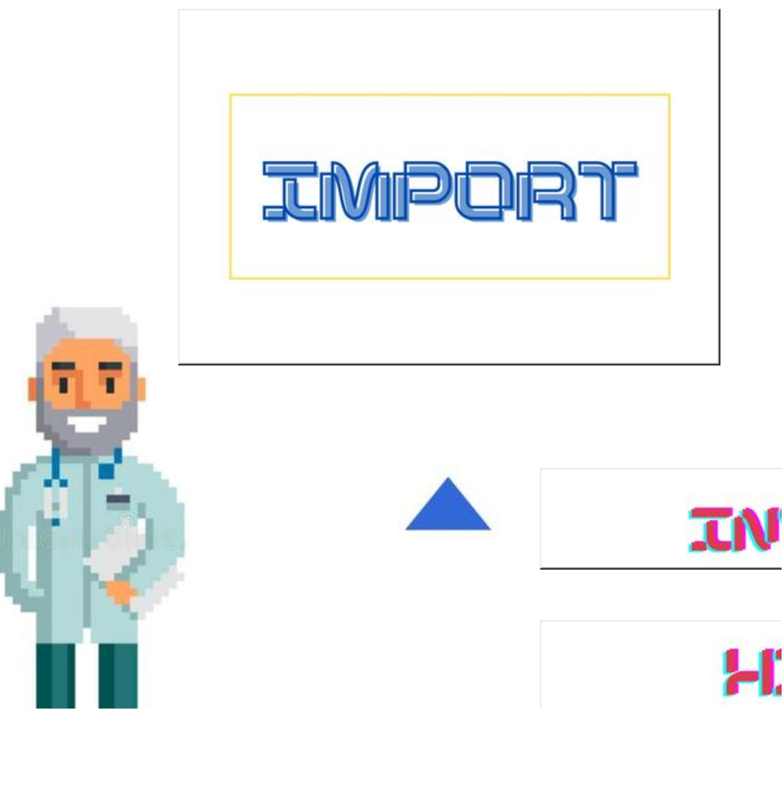
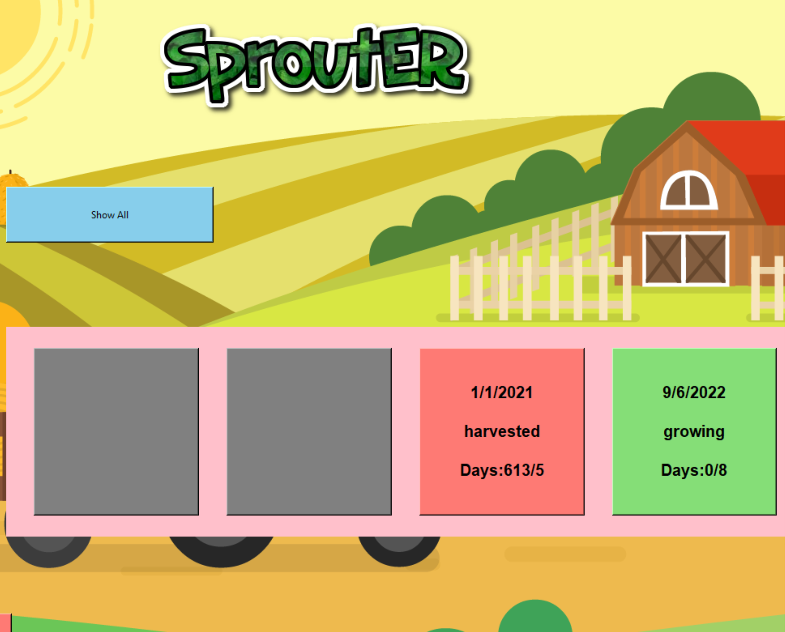

Medical Store Inventory
A python app that uses the tkinter GUI module and postgreSQL database used to keep track of medical equipment at a store. This app is used with uniquely generated barcodes for each piece of equipment and allows users to enter equipment into the inventory, remove inventory by scanning the barcode, look up inventory, and see what was in store on any given date. This app is used at a store in McAllen, TX: Best Medical Supply McAllen. Click HERE to check the project repository
Sprouter Store Inventory
This Sporut Tracker was built using python, tkinter module, and mySQL for the database backend. This project was built for my mom, who had decided to start growing brocolli sprouts at home. This app lets you enter all the information regarding the sprouts you were growing and method used to grow. It keeps track of all batches, keeps track of water used to water, and reminds you when they must be moved out of the darkness and when they are ready to be harvested. Click HERE to check the project repository